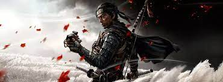
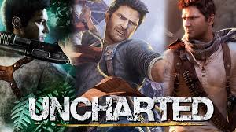

GAMES QUE MAIS GOSTEI DO PS4
Para relembrar este legado, vamos listar abaixo os 5 melhores jogos do console.
Os títulos serão apresentados em ordem aleatória de importância, e certamente alguns dos seus favoritos vão aparecer nas próximas linhas.
GOD Of WAR

NOTA º10
God of War é um jogo eletrônico de ação-aventura desenvolvido pela Santa Monica Studio e publicado pela Sony Interactive Entertainment.
Foi lançado em 20 de abril de 2018 para PlayStation 4 e em 14 de janeiro de 2022 para Microsoft Windows.
SPIDER MAN

NOTA º9,5
Marvel's Spider-Man é um jogo eletrônico de ação-aventura desenvolvido pela Insomniac Games e publicado pela Sony Interactive Entertainment
É baseado nos personagens, mitologia e adaptações em outras mídias do super-herói de histórias em quadrinhos Homem-Aranha da Marvel Comics,
tendo sido lançado exclusivamente para PlayStation 4 em 7 de setembro de 2018. Na história, o criminoso super-humano Senhor Negativo
organiza um plano para se vingar do prefeito Norman Osborn e assumir o controle do submundo criminal de Nova Iorque.
GHOST OD TSUCHIMA
NOTA º10
Ghost of Tsushima é um jogo eletrônico de ação-aventura desenvolvido pela Sucker Punch Productions e publicado pela Sony Interactive Entertainment.
A história acompanha Jin Sakai, um samurai que precisa proteger a Ilha de Tsushima durante a primeira invasão mongol do Japão.
UNCHARTED 1 2 3 e 4
>NOTA º10
A série segue as aventuras de Nathan "Nate" Drake, um caçador de tesouros
e o protagonista do Jogo, o seu mentor e amigo Victor "Sully" Sullivan,
e da jornalista Elena Fisher, e de vários outros companheiros secundários que Drake conhece enquanto viaja ao redor do mundo
para descobrir mistérios históricos.